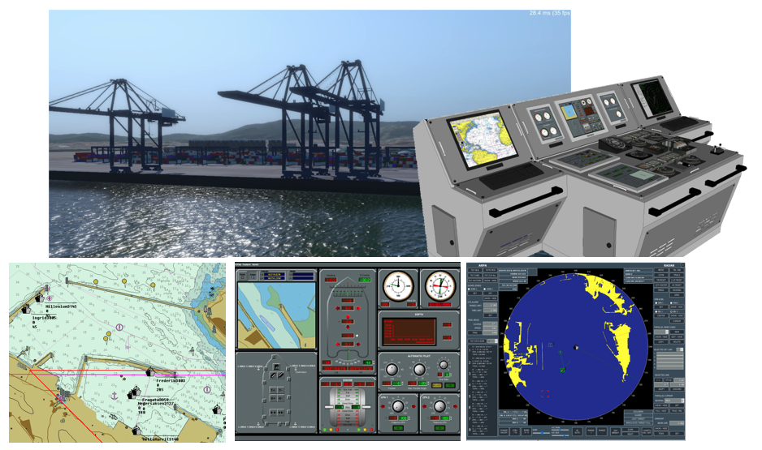

Introducción
Los Simuladores de Navegación (SNM Ulises y SNP Ulises) son productos diseñados para el adiestramiento en todos los aspectos relacionados con la navegación de buques, maniobras, empleo de equipos de navegación y empleo de distintas artes de pesca.
Para ello, este sistema pone a disposición del cliente toda la funcionalidad necesaria para llevar a cabo estos adiestramientos. Gracias a la variedad de configuraciones que admite, el cliente puede seleccionar aquella que mejor se ajuste a sus necesidades.
